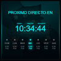

Extensión de Twitch que muestra una cuenta regresiva del tiempo restante para el próximo stream del día.
Esta extensión se configura desde el panel del streamer en Twitch. Los visitantes ven automáticamente el horario del próximo stream.